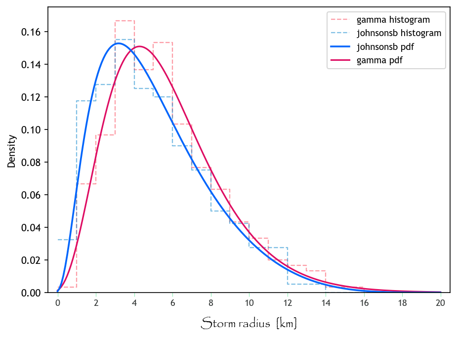

INGESTING PDFs (Probability Density Functions)
Objectives:
Getting familiar on how STORM reads input data
Recipes for plotting statistics (via Seaborn and Matplotlib)
The cornerstone of STORM is its stochastic framework which is built upon probability density functions (PDFs). A PDF is a mathematical conduit that allows the modeling of (measurable) random variables. STORM simulates storm throughout the following random (natural) variables: + TOTALP - total seasonal rainfall + RADIUS - maximum storm radius + BETPAR - decay rate (of maximum rainfall from the storm’s centre towards its maximum radius) + MAXINT - (maximum) rainfall intensity +
AVGDUR - (average) storm duration + COPULA - copula’s correlation parameter + WINDIR - storm’s core direction + WSPEED - storm’s advection velocity + DOYEAR - storm’s starting date + DATIME - storm’s starting time
TOTALP_PDF1+gumbel_l,5.511633973257439,0.2262071569584096
RADIUS_PDF1+johnsonsb,1.5187255885489825,1.269645240869123,-0.27894731916038973,20.797740488039622
BETPAR_PDF1+exponnorm,8.287219232100437,0.017846553384616465,0.010045344544579145
MAXINT_PDF1+expon,0.10575951772499326,6.995586774590339
AVGDUR_PDF1+geninvgauss,-0.0898831096228784,0.7703680797104097,2.843259631396887,82.07861011421329
COPULA_RHO1+,-0.31622002749035444
WINDIR_PDF1+vonmises,2.836341,0.00001
WSPEED_PDF1+norm,7.55,1.9
DATIME_VMF1+m1,0.2468419551426534,0.6893273101866058,6.418276632248997
DATIME_VMF1+m2,0.3315907829508499,1.703495074238532,3.000253688430609
DATIME_VMF1+m3,0.4215672619064808,2.57569021558914,0.4649344363713587
DOYEAR_VMF1+m1,0.05446271224933757,1.907409236571684,105.3227046311876
DOYEAR_VMF1+m2,0.08954689198507723,0.2286006656480273,51.97011694272198
DOYEAR_VMF1+m3,0.07054990890263783,1.551363989955984,87.19112504916305
DOYEAR_VMF1+m4,0.0873236680883794,1.17264771241493,52.91419173073581
DOYEAR_VMF1+m5,0.6981168187745506,0.5586619737368196,6.828147043994408
TOTALP, for Season 1 (in the logarithmic-space), as a left-skewed Gumbel distribution with \(\mu \approx 5.51\) and \(\sigma^2 \approx 0.266\).The retrieveal, setting, and sampling of PDFs is done by STORM through the functions: READ_PDF_PAR, RETRIEVE_PDF, CHECK_PDF, RANDOM_SAMPLING, TRUNCATED_SAMPLING, SEASONAL_RAIN, ENHANCE_SR, COPULA_SAMPLING, TOD_CIRCULAR, and TOD_DISCRETE of the rainfall.py module.
HANDLING JUST ONE PDF AT A TIME
RADIUS - maximum storm radius).[62]:
# loading libraries
import matplotlib.pyplot as plt
import numpy as np
import pandas as pd
import seaborn as sns
from scipy import stats
Let’s read the PDFs-file. It comes with two seasons but we’ll use just one.
[63]:
# https://stackoverflow.com/a/58227453/5885810 -> import tricky CSV
file_pdfs = "../model_input/ProbabilityDensityFunctions_TWO.csv"
PDFS = pd.read_fwf(file_pdfs, header=None)
PDFS = PDFS.__getitem__(0).str.split(",", expand=True).set_index(0).astype("f8")
# how does it look like?
print(PDFS)
1 2 3 4
0
TOTALP_PDF1+gumbel_l 5.511634 0.226207 NaN NaN
TOTALP_PDF2+norm 5.362910 0.316761 NaN NaN
RADIUS_PDF1+johnsonsb 1.518726 1.269645 -0.278947 20.797740
RADIUS_PDF2+gamma 4.399626 -0.475113 1.399112 NaN
BETPAR_PDF1+exponnorm 8.287219 0.017847 0.010045 NaN
BETPAR_PDF2+burr 2.351236 0.850598 -0.001137 0.083777
MAXINT_PDF1+expon 0.105760 6.995587 NaN NaN
AVGDUR_PDF1+geninvgauss -0.089883 0.770368 2.843260 82.078610
MAXINT_PDF1+Z1+expon 0.109404 5.760539 NaN NaN
MAXINT_PDF1+Z2+expon 0.105760 7.113553 NaN NaN
MAXINT_PDF1+Z3+expon 0.305323 7.352659 NaN NaN
AVGDUR_PDF1+Z1+geninvgauss -0.105857 0.609322 5.046340 74.205047
AVGDUR_PDF1+Z2+geninvgauss -0.083949 0.811979 2.380416 83.779999
AVGDUR_PDF1+Z3+fisk 1.434418 10.177944 57.545228 NaN
COPULA_RHO1+ -0.316220 NaN NaN NaN
COPULA_RHO1+Z1 -0.276457 NaN NaN NaN
COPULA_RHO1+Z2 -0.312464 NaN NaN NaN
COPULA_RHO1+Z3 -0.440389 NaN NaN NaN
MAXINT_PDF2+expon 0.105760 6.995587 NaN NaN
AVGDUR_PDF2+geninvgauss -0.089883 0.770368 2.843260 82.078610
MAXINT_PDF2+Z1+expon 0.109404 5.760539 NaN NaN
MAXINT_PDF2+Z2+expon 0.105760 7.113553 NaN NaN
MAXINT_PDF2+Z3+expon 0.305323 7.352659 NaN NaN
AVGDUR_PDF2+Z1+geninvgauss -0.105857 0.609322 5.046340 74.205047
AVGDUR_PDF2+Z2+geninvgauss -0.083949 0.811979 2.380416 83.779999
AVGDUR_PDF2+Z3+fisk 1.434418 10.177944 57.545228 NaN
COPULA_RHO2+ -0.316220 NaN NaN NaN
COPULA_RHO2+Z1 -0.276457 NaN NaN NaN
COPULA_RHO2+Z2 -0.312464 NaN NaN NaN
COPULA_RHO2+Z3 -0.440389 NaN NaN NaN
DATIME_VMF1+m1 0.246842 0.689327 6.418277 NaN
DATIME_VMF1+m2 0.331591 1.703495 3.000254 NaN
DATIME_VMF1+m3 0.421567 2.575690 0.464934 NaN
DATIME_VMF2+m1 1.000000 1.444014 1.054371 NaN
DOYEAR_VMF1+m1 0.054463 1.907409 105.322705 NaN
DOYEAR_VMF1+m2 0.089547 0.228601 51.970117 NaN
DOYEAR_VMF1+m3 0.070550 1.551364 87.191125 NaN
DOYEAR_VMF1+m4 0.087324 1.172648 52.914192 NaN
DOYEAR_VMF1+m5 0.698117 0.558662 6.828147 NaN
DOYEAR_VMF2+m1 1.000000 0.713610 3.908576 NaN
STORM re-shapes the above matrix, and coverts it (according to a given PDF-selection) into dictionaries of PDFs. Something like this:
[64]:
# here the RADIUS-PDFs for the two season are stored in one list
RADIUS = [
{"": stats.johnsonsb(1.5187, 1.2696, -0.2789, 20.7977)},
{"": stats.gamma(4.3996, -0.475, 1.399)},
]
# how does it look like?
list(map(print, RADIUS))
{'': <scipy.stats._distn_infrastructure.rv_continuous_frozen object at 0x000002C11FEC05E0>}
{'': <scipy.stats._distn_infrastructure.rv_continuous_frozen object at 0x000002C11FCA07C0>}
[64]:
[None, None]
Now we “trace” individually each PDF (just to see the variations in/on the PDFs. The selected/established PDFs are johnsonsb (for season 1) and gamma (for season 2 –if we’re tracking seasons–). Scipy is the library in charge of handling PDFs.
[65]:
johns = RADIUS[0][""]
gamma = RADIUS[1][""]
# seed... to have some consistency among runs
np.random.seed(seed=42)
# here is where the "random" sampling is done
h_johns = pd.DataFrame({"distribution": "johnsonsb", "samples": johns.rvs(size=400)})
h_gamma = pd.DataFrame({"distribution": "gamma", "samples": gamma.rvs(size=300)})
We then group the previous outputs into a Pandas dataframe, so we can easily plot them together later.
[66]:
data = pd.concat([h_johns, h_gamma], ignore_index=True)
# how does it look like?
print(data)
distribution samples
0 johnsonsb 3.678668
1 johnsonsb 10.664618
2 johnsonsb 6.581684
3 johnsonsb 5.316964
4 johnsonsb 2.216708
.. ... ...
695 gamma 8.466893
696 gamma 4.631129
697 gamma 2.597868
698 gamma 6.362148
699 gamma 5.696321
[700 rows x 2 columns]
Visualization
First, let’s define/call some nice Font Types.
[67]:
plt.rcParams.update(plt.rcParamsDefault)
plt.rcParams["font.family"] = "Trebuchet MS", "Impact", "Candara", "Papyrus"
Then, let’s define some basic variables to be shared among the data/plot.
[68]:
_size = 200 # -> number of bins to split the X.axis
x_min = 0
x_max = 20
s_tep = abs(x_max - x_min) / _size # -> resolution of the X.axis
x_axis = np.linspace(x_min, x_max, num=_size + 1, endpoint=True)
Now, let’s “compute” the PDFs for the values in x_axis.
[69]:
d_johns = johns.pdf(x_axis)
d_gamma = gamma.pdf(x_axis)
# what are 'd_johns' and 'd_gamma'?
print(d_johns[:12])
print(d_gamma[:12])
[0.00078869 0.00255882 0.0056964 0.01022536 0.01600589 0.02281604
0.03040706 0.03853594 0.04698228 0.05555549 0.06409643 0.072476 ]
[0.0012772 0.00227664 0.00365583 0.00544392 0.00765683 0.01029853
0.01336251 0.0168333 0.02068797 0.02489752 0.02942824 0.03424292]
[80]:
# some more parameters...
binw = 1
xbin = np.linspace(x_min, x_max, num=int(abs(x_max - x_min) / binw + 1), endpoint=True)
xlab = np.linspace(x_min, x_max, num=10 + 1, endpoint=True)
# the plot starts here
fig, ax = plt.subplots(figsize=(7, 5), dpi=150)
# seaborn histogram
# https://seaborn.pydata.org/generated/seaborn.histplot.html
sns.histplot(
data=data,
x="samples",
hue="distribution",
stat="density",
ax=ax,
multiple="layer",
alpha=0.53,
bins=xbin, # binwidth=binw
element="step",
fill=False,
lw=1.1,
ls="dashed",
palette={"johnsonsb": "xkcd:water blue", "gamma": "xkcd:watermelon"},
common_norm=False,
zorder=0,
# edgecolor='xkcd:washed out green',
)
# PDF-curves
# use this if stat=='density'
ax.plot(x_axis, d_johns, color="xkcd:bright blue", lw=1.7, ls="solid", zorder=2)
ax.plot(x_axis, d_gamma, color="xkcd:cerise", lw=1.5, ls="solid", zorder=1)
# # use this if stat=='probability'
# ax.plot(
# x_axis,
# d_johns / d_johns.sum() * binw / s_tep,
# color="xkcd:bright blue",
# lw=1.7,
# ls="solid",
# zorder=2,
# )
# ax.plot(
# x_axis,
# d_gamma / d_gamma.sum() * binw / s_tep,
# color="xkcd:cerise",
# lw=1.5,
# ls="solid",
# zorder=1,
# )
# custom legend
ax.legend(
labels=["gamma histogram", "johnsonsb histogram", "johnsonsb pdf", "gamma pdf"],
loc="upper right",
fontsize=9,
)
# tweaking axes-stuff
ax.set_xticks(xlab)
# turn xlabs into integer-strings
ax.set_xticklabels(
labels=[str(int(x)) for x in xlab], fontdict={"size": 9, "color": "xkcd:charcoal"}
)
ax.tick_params(
axis="x",
which="major",
direction="out",
pad=+2,
color="xkcd:weird green",
length=4,
width=0.3,
)
ax.set_xlim([x_min - 0.5, x_max + 0.5])
plt.xlabel(
r"Storm radius [km]",
fontsize=12,
color="xkcd:black",
labelpad=9,
fontname="Papyrus",
)
# # activate this block for more fun-control
# ax.set_yticks(np.linspace(0, 0.16, 5), minor=False)
# ax.tick_params(
# axis="y",
# which="major",
# direction="in",
# pad=1.5,
# color="xkcd:charcoal",
# labelcolor="xkcd:charcoal",
# labelsize=11,
# length=3,
# )
# plt.ticklabel_format(axis="y", style="sci", scilimits=(1, -2))
# # doing minor ticks
# ax.set_yticks(np.linspace(0, 0.17, 18), labels=None, minor=True)
# ax.tick_params(
# axis="y",
# which="minor",
# direction="in",
# color="xkcd:charcoal",
# length=1.5,
# width=0.5,
# )
# ax.set_ylim([0, 0.17])
# plt.ylabel("density [-]", fontsize=12, color="xkcd:black", labelpad=13)
# plt.title("some unnecessary title")
plt.show()
# # use these for exporting and cleaning [don't forget to comment out "plt.show()"!!]
# plt.savefig(
# "one_.pdf", bbox_inches="tight", pad_inches=0.02, facecolor=fig.get_facecolor()
# )
# plt.close()
# plt.clf()

I’d would ask then… what would the above graph look like if binw is different from 1??